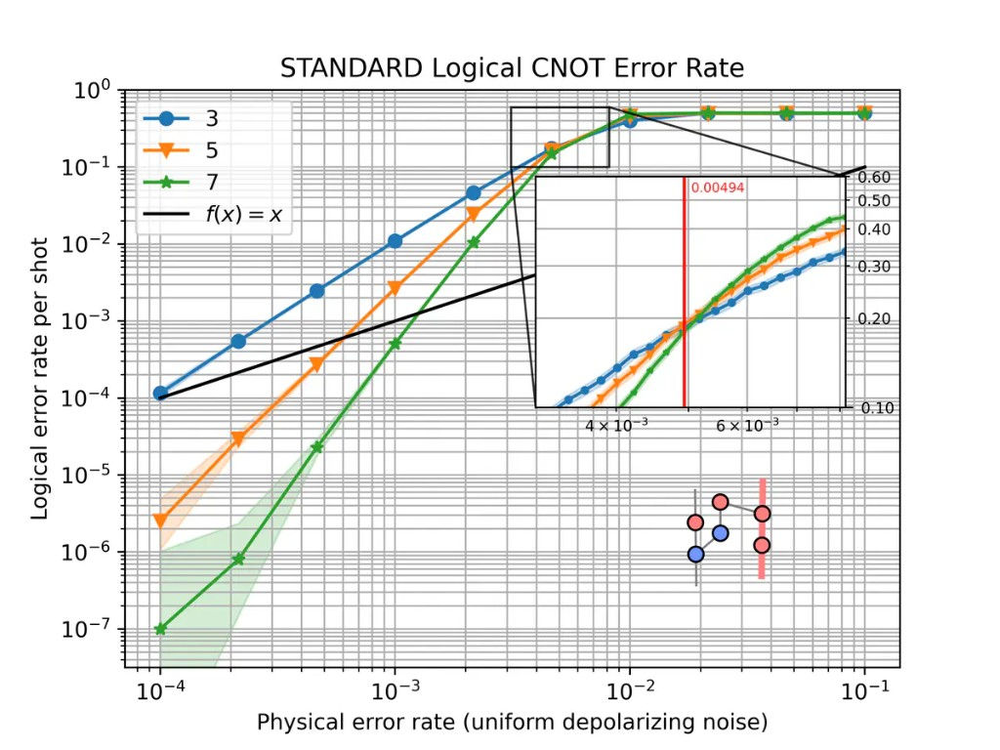

Reading logical error-rate plots#
The gallery and several user-guide notebooks plot the logical error rate of a computation as a function of the physical error rate and the code distance. This page explains how to read those plots.
The example below comes from the Quick start using tqec guide. The same reading applies to memory experiments, Steane encoding, and the other gallery notebooks. For background on thresholds and distance scaling, see Surface codes.

Logical CNOT error rate at distances \(d \in \{3, 5, 7\}\) under uniform depolarizing noise.#
The axes#
The physical error rate on the horizontal axis is the noise strength \(p\)
applied to the compiled stim circuit. Most examples use
uniform_depolarizing(), but any noise model
parameterized by a single rate \(p\) can be plotted the same way.
The logical error rate on the vertical axis is the estimated probability that one shot of the full experiment ends with a wrong decoded outcome for the observable under study. Both axes use a logarithmic scale.
By default, sinter.plot_error_rate reports this rate per shot. Several gallery
notebooks instead pass failure_units_per_shot_func=lambda stat: stat.json_metadata["d"],
which rescales the axis to an approximation of the logical error rate per QEC round (check the y-axis
label on the plot you are reading). The example at the top of this page is per shot.
Each curve corresponds to one code distance \(d\). In tqec, distances are
generated from the scaling parameter \(k\) by \(d = 2k + 1\).
The inset#
The Quick start using tqec guide and gallery notebooks usually include a small ZX graph in a corner. It shows the computation that was simulated and the logical observable the curve refers to. Other pages may show static figures instead, or a threshold zoom inset as in Detailed plots with tqec, rather than this ZX diagram.
The graph is the spacetime diagram of the BlockGraph, obtained with
block_graph.to_zx_graph(). Red nodes are \(X\)-type spiders and blue
nodes are \(Z\)-type spiders, as elsewhere in tqec (see
Correlation Surface).
The thick highlighted edges trace a correlation surface: the
measurements whose parity tracks how a logical operator is transformed from input to
output. The surface shown is the one passed to
start_simulation_using_sinter(). If you change the
observable or the computation, both the inset and the curves change.
The inset is drawn by plot_observable_as_inset().
How the points are computed#
Each marker is estimated from many independent shots. For each plotted distance
\(d\), tqec uses the corresponding scaling parameter \(k\) with
\(d = 2k + 1\). For each pair \((k, p)\), equivalently \((d, p)\):
The
BlockGraphis compiled at that distance and exported to a noiselessstimcircuit with detectors and logical observables.Noise at rate \(p\) is injected through the chosen noise-model factory.
stimsimulates the circuit and records detector syndromes and uncorrected logical outcomes.A decoder (typically
pymatching) predicts the logical correction bit from the syndromes.A mismatch between the corrected logical outcome and the expected value counts as one logical error.
The logical error rate is estimated from the fraction of non-discarded shots with a logical error, together with uncertainty bounds (reported per shot or per round depending on how the plot is configured).
In code this is handled by
start_simulation_using_sinter(), which builds tasks
with generate_sinter_tasks() and collects statistics
via sinter. Sampling stops when max_shots and/or max_errors is reached,
which is one reason some low-noise points may be missing (see
Confidence intervals and missing points).
Below and above threshold#
Scalable QEC code families of practical importance have an error threshold \(p_\text{th}\): a physical error rate below which increasing the distance suppresses the logical error rate, and above which increasing the distance no longer improves the result. The surface-code scaling law is discussed on the Surface codes page.
On a typical plot, three regimes are visible:
Below threshold — at low \(p\), curves for larger \(d\) lie lower. On a log–log plot they often look like straight lines.
Above threshold — at high \(p\), all curves converge toward a logical error rate near \(1/2\). Increasing \(d\) no longer helps.
Near the crossing — where curves for different distances meet gives a rough visual
estimate of \(p_\text{th}\) for that computation, decoder, and noise model. In the
CNOT plot above, the inset zooms into this crossing region and the red vertical line
marks the estimated threshold. For a more precise value, use
binary_search_threshold() as in Detailed plots with tqec.
The numeric ranges mentioned above depend on the example. The CNOT plot at the top of this page crosses near \(p \sim 5 \times 10^{-3}\); your computation may differ.
The slope below threshold#
Below threshold, the most useful feature is the slope of each curve on the log–log plot. A steeper slope means that increasing \(d\) suppresses logical errors faster as \(p\) is reduced.
Near threshold, a common rule of thumb (see Surface codes) is
When comparing two implementations, check both the vertical separation at fixed \(p\) and whether the slopes match. A constant vertical shift with the same slope suggests overhead; different slopes suggest a change in effective distance or a bug in the implementation.
Error suppression factor \(\Lambda\)#
The error suppression factor \(\Lambda\) measures how much the logical error rate drops when the distance increases. One practical estimate at fixed \(p\) below threshold is
for \(d' = d+2\) at the same \(p\) below threshold (so \(\Lambda > 1\) when suppression improves with distance). Values close to what the power-law scaling above predicts indicate healthy surface-code-like behaviour. A much smaller \(\Lambda\) suggests extra failure mechanisms — boundary effects, hook errors, or decoder limitations — that reduce the expected suppression.
This matters for resource estimation: knowing how fast \(p_L\) falls with \(d\) tells you how large a code is needed at a given hardware error rate.
Pseudo-threshold#
For a fixed distance, the pseudo-threshold is the physical error rate where the logical error rate crosses the unencoded baseline. When that baseline is the same quantity as the physical error rate on the x-axis, this appears as the diagonal guide line \(p_L = p\) on a log-log plot. Below that crossing, the finite-distance encoded computation is suppressing errors relative to the baseline; above it, it is not.
Like \(p_\text{th}\), a pseudo-threshold depends on the circuit, decoder, and noise model. Unlike \(p_\text{th}\), it also depends on the chosen distance and on whether the plot reports failures per shot or per round. Treat it as a quick visual guide only, especially when the y-axis has been rescaled per round. To argue that a computation is below threshold, compare curves across several distances or run a dedicated threshold search.
Confidence intervals and missing points#
The shaded bands are confidence regions for the binomial parameter being plotted on the y-axis (per shot or per round). They are not symmetric Gaussian error bars.
sinter.plot_error_rate uses sinter.fit_binomial, which includes all rates
whose likelihood is within a factor max_likelihood_factor of the
maximum-likelihood estimate. Because the logical error rate lies in \([0, 1]\), the
intervals are naturally asymmetric, especially near the boundaries of that interval. For
more detail, see this discussion of
binomial confidence intervals.
Wide bands at low \(p\) usually mean that few logical errors were observed
before sampling stopped. Estimating a rate of \(10^{-6}\) with tight bounds requires
either a very large number of shots or stopping only after many errors; if max_shots
is reached first, little data is collected on the left side of the plot.
Missing markers on the low-noise side of a plot typically mean that no logical
errors were recorded (errors == 0), so sinter.plot_error_rate omits the
point, or that the corresponding simulation task did not finish. Increasing
max_shots, max_errors, or reusing a save_resume_filepath fills in the left
side of the plot at the cost of longer runs.
You might occasionally see duplicate markers at the same \(p\); this is a known plotting artifact tracked in issue #825.